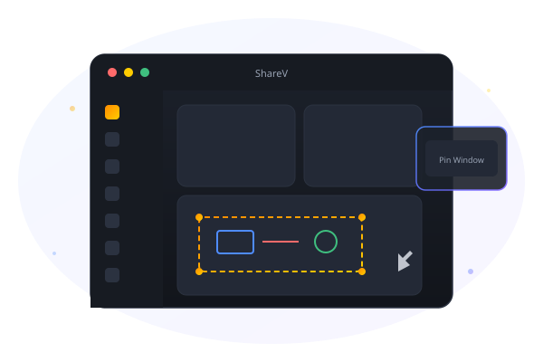
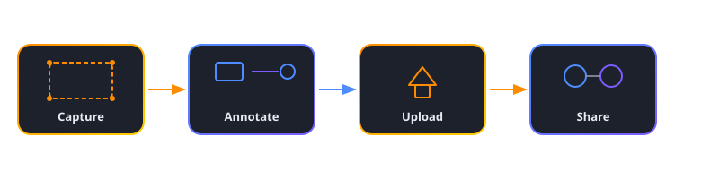
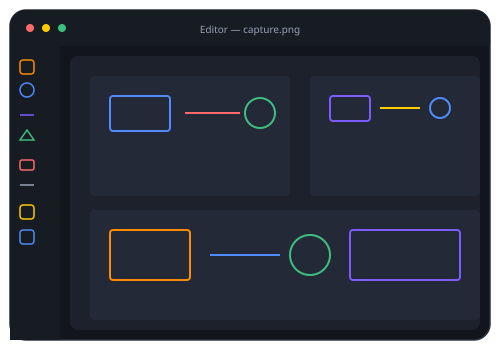
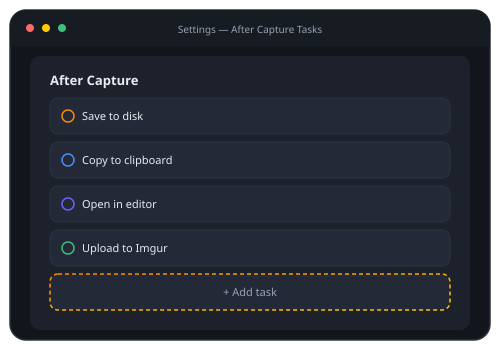
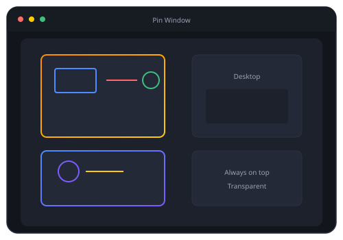

ShareV is the open-source screen capture, annotation, and sharing tool built natively for Linux. Capture, annotate, record, upload, and share — all in one app.

A complete screen capture and sharing workflow, built for Wayland and X11.
Region, fullscreen, and window capture with delay timer and monitor picker. Works on Wayland and X11.
Record to MP4, WebM, or animated GIF with system audio, microphone, or both. Configurable frame rate.
Draw rectangles, ellipses, arrows, pen strokes, add text, pixelate sensitive info, and crop — with undo/redo.
Automate your post-capture and post-upload workflows: save, copy, upload, pin, run commands, notify.
Upload to Imgur, any HTTP endpoint, or a custom shell command. Links copied as URL, Markdown, or HTML.
Keep any capture floating on your desktop in a borderless, always-on-top, transparent window.
XDG Portal integration on Wayland, tauri-plugin-global-shortcut on X11. Or bind the CLI in your compositor.
Scriptable commands for capture, record, upload, and pin. Designed for compositor keybindings.
Signed in-app updates from GitHub Releases. .deb, .rpm, and AppImage packages for major distributions.
A streamlined pipeline from screen to shared link — no friction, no extra tools.

Powerful features, beautifully integrated.
Mark up screenshots with a full set of tools. No external editor needed.

Automate what happens after each capture and upload. Define your own pipeline.

Keep reference images, notes, or designs always visible on your desktop.

Available in multiple formats for major Linux distributions. Open source, MIT licensed.
Also available as a Flatpak. Requires Linux with Wayland or X11. View all releases on GitHub.
grim and slurp for capture. On X11, it uses ImageMagick's import. Global hotkeys use XDG Portal on Wayland and tauri-plugin-global-shortcut on X11.sharev capture region, sharev record fullscreen, sharev upload shot.png, and more. Flags like --delay, --monitor, and --window are available. Perfect for binding in Hyprland, Sway, or any compositor.